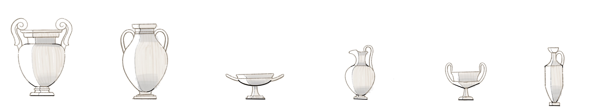
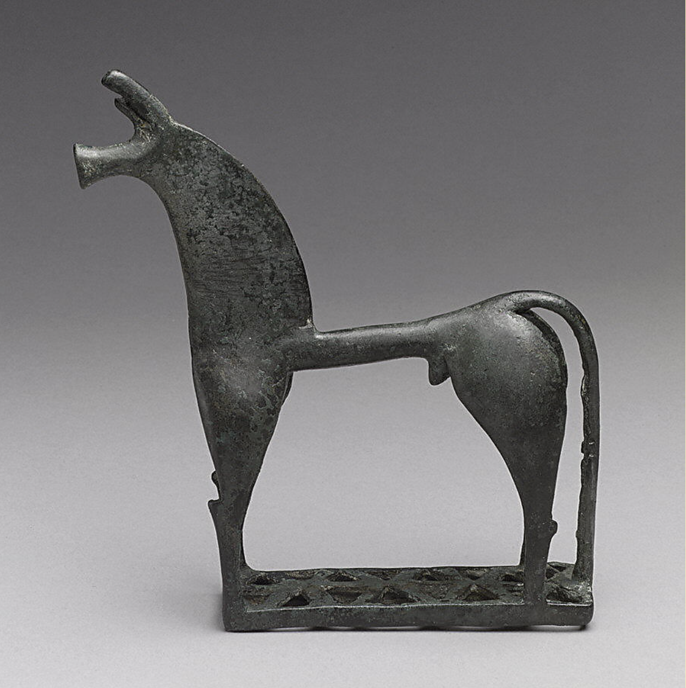

Figures were abstracted to geometric shapes, pieces were adorned with patterns and figures which often told a story. These pieces were used in funerals and rituals to give status to the deceased, and would be buried at grave sites.
Used for mixing water & wine.
Used for storing liquids and grains.
Used for drinking water mixed with wine, revealing an image at the base when empty.
A Wine jug
Drinking Cup
A spouted jug used for pouring.
760-750 B.C.
Standing at 5 feet and one inch tall, it was used as a grave marker. This Amphora was found in Athens, Greece. Repetition, simple forms, no blank space are all clear signs that this is a piece from the Geometric period.

750–735 B.C.
This Krater was found in cemetary as it was used as a grave marker. There are horizontal bands dividing the narrative into registers. The pictorial bands are also known as "Freizes." It is decorated with a narrative funerary scene with mourning figures in a procession, with the dead figure laying down in the center.
8th Century. B.C.
This little horse was cast in bronze, and is about 6inches tall and 5 inches long. It served as a votive figure in a Greek sanctuary. Horses were expensive to posess, and thus they became a symbol of wealth and power, which reflected on the owner's grave. The horse’s body has been abstracted to geometric shapes.

Mid-8th century B.C.
These bowls were often buried with their owners and used as a container for small objects throughout their lifetime.